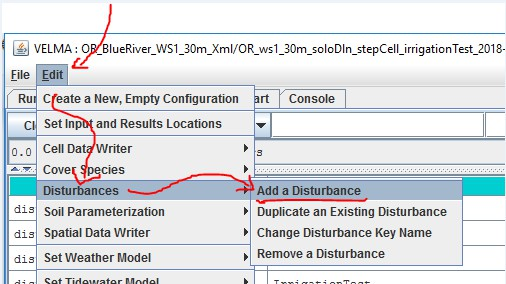
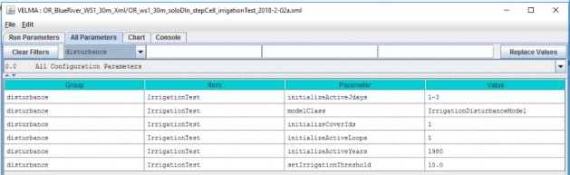

E.5 | Irrigation Disturbance
Overview (Tutorial E.5 - Add Irrigation Disturbance)
This document describes how to build an Irrigation Disturbance in VELMA. This provides a way to add specific amounts of water to specific categories of cells within the simulated watershed, at specific steps during the simulation run, and for specific precipitation conditions.
Use the Irrigation Disturbance routine in VELMA to specify when (Julian days) and where (mapped cell locations) you want to add irrigation water. The irrigation water is added "as-if" it is a rain addition for the specified cell(s). This prevents irrigation water additions from perturbing VELMA's water balance mechanisms.
Note that cell locations to be irrigated are limited to the Cover Types you specify. For example, suppose you wish to irrigate only a subset of grassland areas amongst all "Grassland" cover type areas within the simulated watershed. In that case, you will need to create a cover type named "IrrigatedGrassland" (or something similar), and assign a unique integer to all cells for that new cover type in the watershed's
Cover Type map. Otherwise all cells designated in the Cover Type map as "Grassland" will be irrigated.
Using the Irrigation Disturbance
Add an Irrigation Disturbance to your simulation configuration in JVelma via the menu Edit -> Disturbances -> Add a Disturbance item.
Clicking the "Add a Disturbance" item opens the "Specify Disturbance Model Type and Name" dialog. Select "IrrigationDisturbanceModel" in the dropdown selector as the model type.

The Disturbance Name can be any meaningful text name, but it can only be composed of letters of the alphabet, the digits 0-9, and the underscore ("_") character.
It must also be unique from any other disturbances named in the same simulation configuration.
After entering a name for the new Irrigation Disturbance, click the OK button, and JVelma will create a new parameterization group and filter the parameters table view to show only its parameters in the "All Parameters" tab.
Here is an example of a new Irrigation Disturbance, created with the name "Irrigation Test":
The example parameterization above schedules irrigation to occur for cells with Cover Type = 1 during the first simulation loop, on the first 3 days of year 1980.
Even during the 3 days of 1980 when irrigation can occur, it will only occur for Cover Type 1 cells in which (irrigationThreshold - totalPrecipitation) > 0.0.
(Where totalPrecipitation is the total precipitation for a given cell on a given day - e.g. if irrigationThreshold = 10.0, but the totalPrecipitation = 5.0, no irrigation occurs even if the cell is otherwise-eligible.)
Capturing Irrigation Details in VELMA Simulation Results
To observe how much irrigation occurs (and when it occurs), add a SpatialDataWriter
parameterization for the VERTICAL_WATER_ADDITION pool to your simulation configuration.
Here is an example, configured to emit .asc maps on the same days as the example Irrigation Disturbance configuration given above.

Be aware that the VERTICAL_WATER_ADDITION pool is shared by other disturbances and simulator engine mechanisms.
If you have Groundwater Storage, or Water Drain Disturbance configured and active in your simulation, the VERTICAL_WATER_ADDITION amounts represent the sum of the contributors than share the pool. (Currently, however, there are no other results reporting mechanisms for irrigation amounts.)